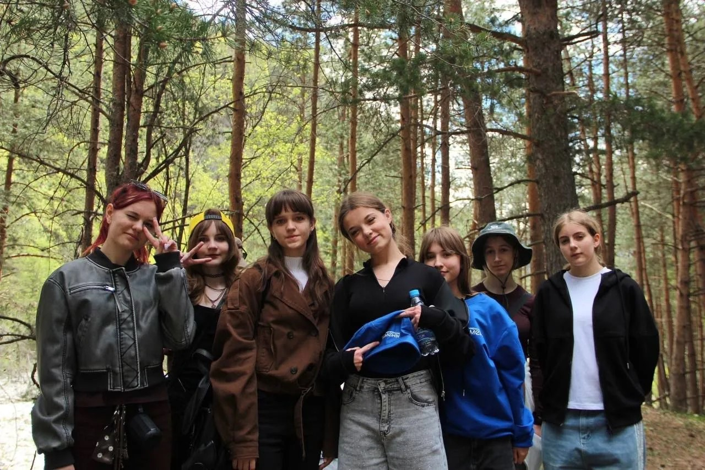
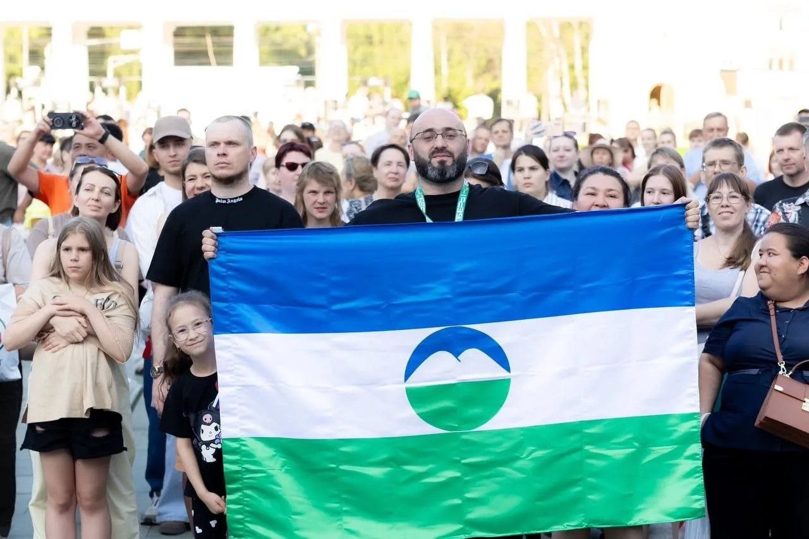
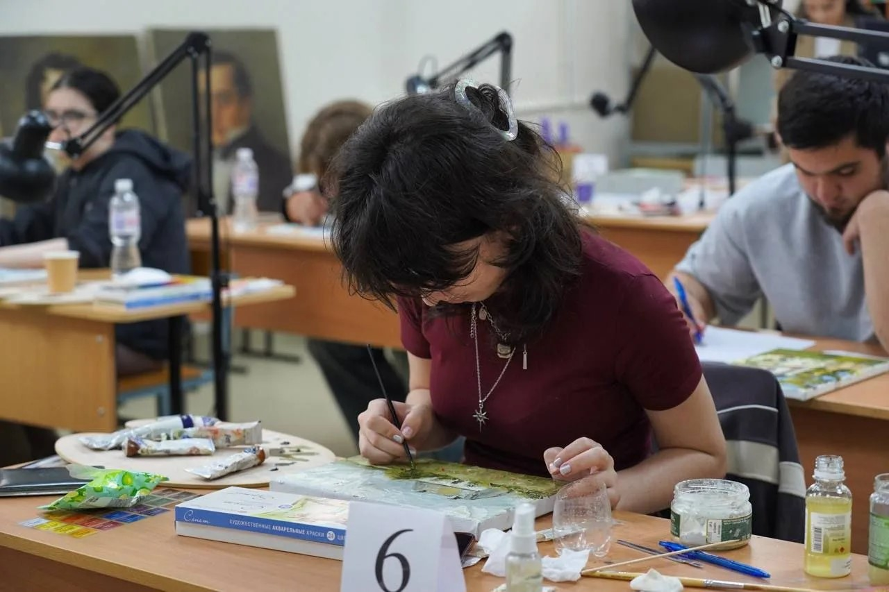

Выбор профессии — одно из самых важных решений. Мы поможем найти твой путь.
Кабардино-Балкарский государственный университет — это не просто один из старейших вузов Северного Кавказа. Это место, где традиции классического образования встречаются с самыми современными технологиями, а студенты становятся частью большой научной семьи.
Основанный в 1957 году, сегодня КБГУ — это крупнейший университет Кабардино-Балкарии, где обучаются более 19 000 студентов, включая около 2 500 иностранцев из 40 стран мира. Университет носит имя Х. М. Бербекова и по праву считается драйвером развития всего региона.
Выбор профессии — одно из самых важных решений в жизни. Кабардино-Балкарский государственный университет помогает сделать этот выбор осознанным: ещё в школе, через проекты, олимпиады и общение с учёными.
Приёмная кампания стартует 20 июня 2026 года.
Три способа подачи документов:
Важные даты:
Квоты:
Адрес приёмной комиссии: ул. Чернышевского, 173.
Горячая линия (многоканальный): +7 (8662) 42-27-79
Дополнительный телефон: +7 (8662) 42-22-40
Электронная почта: pkkbsu@kbsu.ru
Ответьте на 30 вопросов честно. В конце вы узнаете свой тип личности и подходящие профессии.

Анна, 3 курс, филология

Марат, 2 курс, инженерия

Елена, 4 курс, юриспруденция
Арсен, 1 курс, IT
Диана, 3 курс, журналистика
Тимур, 2 курс, экономика
Студенты 3 курса журналистики КБГУ рассказывают о своих профессиях.